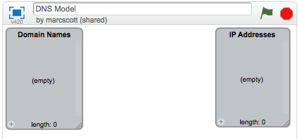
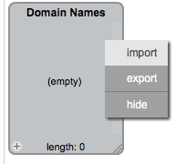
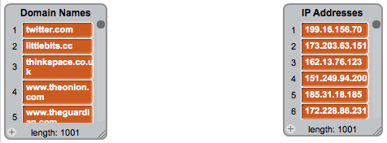
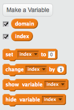
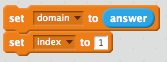
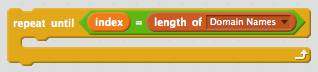
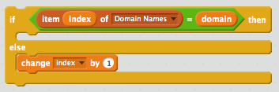
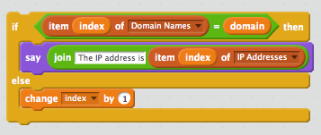

Modelling a DNS
Table of Contents
1 Modelling a DNS table
Code It
- Go to The MIT Scratch website
- Create a new project
- Name it DNS model
Research It
- A Domain Name Server has a table stored on it, that will look something like this:
| Domain Name | IP Address |
|---|---|
| google.com | 74.125.239.116 |
| bbc.co.uk | 212.58.246.90 |
A quick note. Not everything explained in this presentation is true. Some of it is a simplification to make things easier to understand
Code It
- We're going to have to build a DNS Table to begin with. This is going to be made up of two lists.
- In Scratch, create a new list called
Domain Namesand then another list calledIP Addresses

Code It
- We're going to need a few Domain names and IP Addresses to populate our table. About 1000 of each should do the trick.
- This would take ages by hand, but luckily Scratch allows us to import text files.
- Download this text file - Domains.txt and this text file - IPs.txt
- Now right click on the gray box that represents the Domain Names list and choose import from the context menu.
- You can then direct your file browser to the downloaded file.

- Do the same for the IP Addresses list and you should end up with something that looks like this.

2 Linear Search
Research It
- When you type in a URL into a web-browser address bar, your computer consults the DNS server, to find the IP address.
- The DNS server has to look up the domain name and find the corresponding IP address
- To do this the server needs to use a searching algorithm.
-—
On the image below you're presented with an Identity Parade Lineup. You need to find this face:

Document It
- Explain how you choose to find the correct face from the line up.
- Try and explain how you think a computer might have done it.
- How long do you think it would take you to find the IP address of a domain name in the list of 1001 you now have in Scratch?
Learn It
- A linear search is a method of going through a list of items, one by one, and checking each item.
- Imagine we had a list of 'things'
[cat,dog,horse,mouse,rabbit,parrot,elephant]
- If we wanted a computer to program to find the position of the element
parrot it would check from left to right
- The program would check what was at position 1, see if it was parrot and if it wasn't it would move onto position 2, and so on.
- Luckily, computers can do this exceptionally quickly.
3 Indexing a list
Learn It
- As a computer reads through a list, it needs to keep track of where it is. This is what an index is for.
- Imagine we have the following two lists:
OperatingSystems = ['Mac OSX','Windows 8','Android','iOS','Ubuntu'] Rating = ['4/5','2/5','4/5','3/5','5/5']
- The items in the first list are Operating systems.
- The items in the second list give a user rating out of 5.
- Imagine we wanted to find out the rating out of 5 for Android.
- We could step through the list of operating systems until we found Android.
- This would not tell us where to find the rating out of five in the second list though. It would just tell us that Android exists in the first list.
OperatingSystems = ['Mac OSX','Windows 8','Android','iOS','Ubuntu'] Rating = ['4/5','2/5','4/5','3/5','5/5']
- As we move through (iterate) the first list searching for 'Android', we keep a count of our position. The position is called the index of the list.
- The algorithm looks something like this:
1. index = 1 2. Is Android at index (position 1) 3. No, so add 1 to index 4. Is Android at index (position 2) 5. No, so add 1 to index. 6. Is Android at index (position 3) 7. Yes. So look up index of the second list 8. index (position 3) of the second list is 4/5 9. So Android has a rating of 4/5
4 Using a linear search in our DNS.
- In our Scratch program so far we have a list of domain names and a list of IP addresses.
- We need to be able to conduct a linear search on the list of domain names to find the index of any given name.
Code It
- Start by adding in a When
green flagclicked block
- Now we'll ask the user for the domain name they're looking for.
- Next you'll need a couple of variables:
- Create a variable called
domain - Create a variable called
index
- Create a variable called

- You should set the domain to be the answer of the
askblock and the index to be the integer1

Code It
- Our linear search algorithm could possibly need to search right to the end of the list. So we'll need to use a loop that keeps going until the index is at 1001.

- Currently
indexis1. So the algorithm needs to check the 1st item in domain names, and see if it matches the domain that the user is looking for. We can do this with a conditionalif/elseinside therepeat untilloop.

- If the domain names do not match, then we want
indexto become2, and the algorithm to go back to the start of the loop.

- If however there is a match, then we know that the index of the IPs list will contain the IP address we're looking for.

Run It
- Pick some random domain names from the list and use your algorithm to search for their IP addresses.
- Once you have an IP address you can copy and paste it into your browser's URL bar, and you should get directed to the site
- Not all of them will work however, as some sites use redirects and other trickery that will fool your browser.
Document It
- Use screen shots and some text to try to explain how your Linear Search algorithm works.
Learn It
Here's a quick recap of what you've covered so far.
- Domain names are easy for humans to read and remember.
- Each domain name links to an IP address that computers use to send messages to each other.
- A Domain Name Server (DNS) stores a table of domain names and IP addresses.
- When you type in a URL, your computer asks the DNS what the IP address is for the domain name.
- An item in a list can be referenced by its position, which is called it's index.
- Linear search is one method of finding an element in a list.
5 A Linear Search Project
Badge It
- You're going to try an implement your own Linear Search program now.
- Create a Scratch program that:
- Uses two lists, one to store a Subject Name (e.g. Science) and the other to store a teacher's name.
- Allows a user to search for a Subject Name and returns the teacher of that subject
- Use any sprites you like.
- Make it return 'Not found" if a subject that doesn't exist is asked for.